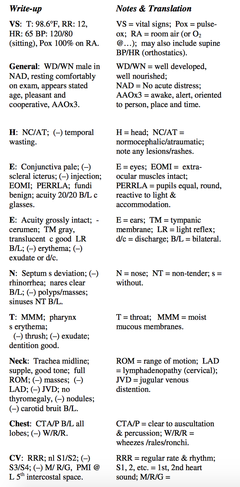
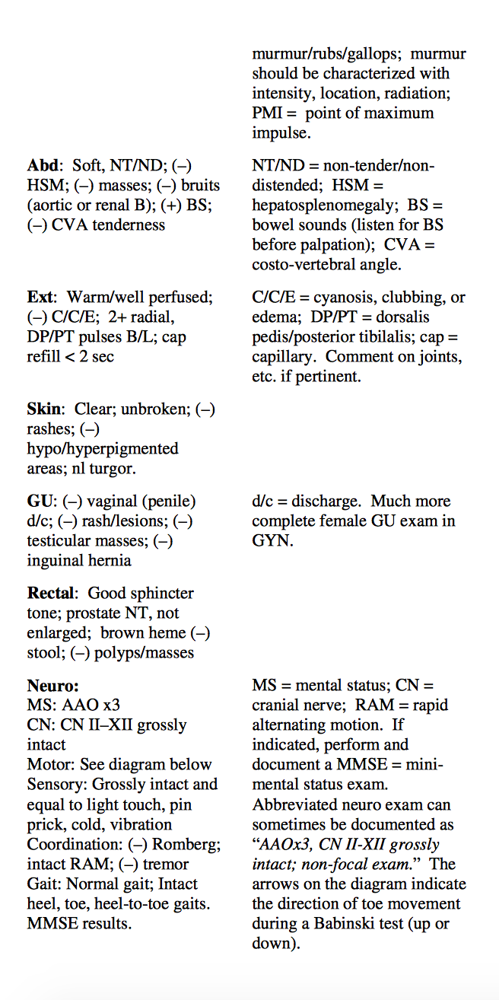
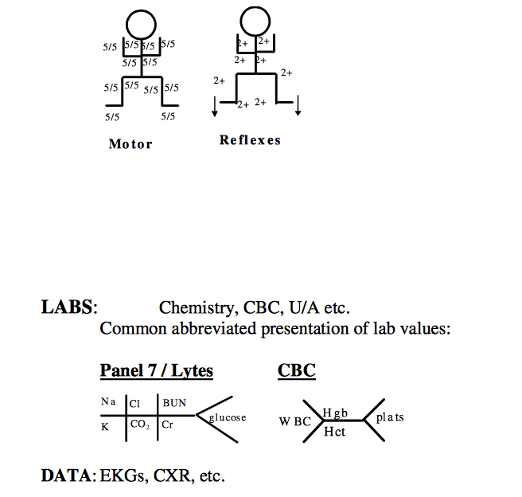

pgs 11, 16-20
The Chart
The exact organization of a patient’s charted medical record is dependent on the hospital and ward in which that patient is located. It may be stored at the bedside, electronically, at some central nursing station, or in some cryptic combination of places. Fortunately, the essential components of the chart are consistent; they all contain sections for physician’s orders, administered medications, vitals, progress notes, lab and radiology results, etc. You’ll quickly learn where best to look to find or record information that is important to you. Ask residents, nurses, or the unit secretaries for help early in the month. Navigating patient charts is an essential skill that you’ll develop with experience. The chart is an important medical and legal document, so everything you write should be legible and clearly signed. Remember to have everything you write in the chart co-signed by an MD, usually your intern or resident. Always date and time your notes, and include some identifying title before each entry (e.g. “MS-II Admit Note” or “MS Progress Note”) and after your signature at the end of the note.
the H & P
You have already had a great deal of experience learning how to perform and write a History and Physical Exam. As time goes on, your H & P will change according to your individual style, the rotation, and the patient. Generally, your write-ups will grow more concise over the course of your clerkship year as you gain a better understanding of what is relevant and what is not relevant. At most institutions, your H & P will be placed on the chart, complemented by an addendum or, in some instances, an additional complete H & P written by the resident. Do not be discouraged by this redundancy. It is often required by hospital policy. Look at your admission note as an opportunity to organize your thoughts about the patient, to learn to be concise and pertinent, to adopt convention, and to demonstrate your understanding to the attending who will undoubtedly read most of what you contribute to the chart. The basic H & P format is below. You will also be asked to submit formal, typed H & P write-ups for some clerkships.
H&P Template
H & P Format
History:
Patient Name: MR Number:

Date: Time:
Source of Hx: Patient, Family, Old Records, etc.
CC: “In patients own words”
HPI: Begin by listing all relevant major medical problems in your first sentence (i.e., Mr. M is a 45 y.o. WM with a hx of NIDDM, CAD, PVD, CRI who presents with ...). Describe all episodes and conditions leading up to and relevant to the reason for admission. Include pertinent positives and negatives from the review of systems. If multiple problems are present discuss them one at a time. Give attention to the duration, intensity, location, radiation, quality, onset, etc. of sx (symptoms). Include a brief synopsis of what was done in the ER, by the EMTs, at the OSH (outside hospital) prior to transfer etc. before the patient came to the floor, such as diagnostic tests and results, medications, fluids given and response. All PMHx relevant to this admission should be detailed, including admissions, ongoing treatments, etc. A chronological structure to the HPI is preferred by most attendings, so try to organize things by when they happened.
PMH: Describe major illnesses (childhood & adult) with a brief discussion of duration, treatment, and control: e.g., rheumatic fever, HTN x 10 yrs. well controlled with meds, s/p CVA ‘91 w/ residual left sided weakness.
Hospitalizations: reason for admission, when, where, treatments?
Surgical procedures w/ dates: Indications? Trauma/Injury: residual defects or limitations? Immunizations (most relevant in peds) Transfusions
Meds: Include dosage and duration. Does the patient actually take them? Don't forget to include over-the-counter drugs and herbal meds. Look back to the PMH to see if the patient may have forgotten to mention a chronic illness indicated by the med list.
All: Record allergies and reactions to medications and foods, or NKDA (No Known Drug Allergies).
FH: Include inherited diseases: ex. diabetes, heart disease, HTN, cancer, mental illness in all immediate family memberse.g., (+) HTN in mother, (+) DM in mother and sister, otherwise (-) for heart dz, CA, mental illness.
SH: Occupation: mention of relevant exposures to asbestos, etc.
In older patients, note their functional status here
Marital status, Children, Living arrangements:
Education:
Tobacco hx: estimate total pack yrs, currently smoking? If not, when did they quit? ETOH use: estimate frequency and quantity.
IV or other illicit drug use:
ROS: Be complete for medicine. Pertinent positives and negatives are usually in the HPI. On many rotations it will be entirely acceptable to write: “ROS as per HPI, otherwise negative.”
Physical Exam, Labs, Data:
PE: Abbreviations are difficult at first, but are pretty much standardized, so you’ll see the same ones over and over again with time, to the point where you adopt most of them in your own notes. Below is a list of common abbreviations in a typical and fairly complete, benign PE.
General: B/L = bilateral; c/ = with; s/ = without; NT = non-tender.

Assessment & Plan
Start with a short summary of 3-4 sentences max. This should be very similar to the bullet you would deliver if your attending wanted a quick summary of the patient’s history and presentation. Follow by listing each active problem numerically with the most important first. In the ICU, you will organize your assessment by organ system (pulmonary, cardiovascular, endocrine, FEN- fluid/electrolytes/metabolism, ID, GU, GI, etc.). Each of the problems you list requires an in- depth assessment (especially in Medicine) which includes a detailed differential diagnosis. Support your thoughts with elements of the patient’s history, physical findings, lab data and procedure results. Conclude with a detailed treatment plan. Don’t worry—your resident will almost always go over this with you the night before when you are on your 200 rotation!
Signature
Print name, MS II
Phone number
Progress Notes
In addition to the comprehensive H&P, every in-house patient you help admit and follow on a
regular basis should have a daily progress note placed in the chart. At HUP, Pennsy, CHOP and
Presby, a basic follow-up note can be printed from Sunrise and filled out during morning prerounding. On some services, you may be asked to write a note using the SOAP format without a template; a basic structure of the SOAP note is given below. You don’t have to wait for all of
the day’s data to come back before writing a daily progress note as you can always write an addendum. It is very important to state that it is the “Medical Student Progress Note” as well as to include the date and time on all the notes or orders you write. Each page of the chart must also have the patient’s name and social security or medical record number. There are often stickers printed out at the beginning of the chart with this pertinent patient identifying information. You can use these stickers to put on the top of your progress notes.
(It is a good idea to include a list of the patient’s current medications with your SOAP note, frequently recorded in the upper right hand corner of the page. Be sure to list any antibiotics that the patient is on, and the number of days they have been taking it (e.g. Gentamicin day 7/14).)
Date:
Time:
S: Subjective information which includes what the patient tells you about how he/she feels.
Also, include pertinent events that occurred during the preceding night. Look through the
nurses’ notes for additional information on the evening’s events or ask the nurse if you
see him/her and have time.
O: Objective information including vital signs, I/O (“ins and outs”), pertinent physical exam
findings, most recent labs, culture results and diagnostic test results.
A/P: Assessment and plan includes a brief summary of what you think are the active issues
with the patient. This is often done as a problem list or by organ system as in the H&P.
Note any significant changes since the previous day, and describe your plan for proposed
treatment. For surgical patients, be sure to begin with “POD # (post-op day
number…with the day after surgery being post-op day 1) s/p (status post) procedure”.
Signature
Print name, MS II
Phone number
Surgery Notes:
Pre-OP Notes
Pre-op notes are written for all surgical patients. The note is essentially a checklist to confirm that all of the required pre-op information has been collected and that the patient is ready for surgery. The note should be completed in the progress note section of the patient’s chart prior to surgery.
Date:
Time:
Pre-op Diagnosis:
Procedure:
Pre-op Orders written: e.g. ABx, NPO, Bowel prep, etc.
Labs: CBC, electrolytes, PT/PTT, U/A. (results recorded prior to sx)
CXR: NAD (no active disease), or note any abnormalities.
EKG: NSR (normal sinus rhythm), rate, normal intervals, axis, no ST-wave changes, or note
any abnormalities.
Blood: Typed and crossed or screened (T&C/S), number of units.
Consent: Signed and on chart.
Anesthesia: To see patient, or patient seen, note on chart.
Consultants - if applicable.
Signature
Print name, MS II
Phone number
OP Notes
Op notes are written in the OR (after the completion of the case) to document the procedure and findings. At HUP there are stickers that one can fill out and place in the chart at the completion of the case. Ask the circulating nurse where to find them.
Pre-op Diagnosis:
Post-op Diagnosis: may put “same”
Procedure: not what was scheduled, but what was actually done.
Attending:
Resident:
Student:
Anesthesia: general w/endotracheal tube (GETT), local, etc.; ask the anesthesia resident if
you’re not sure.
Findings: confirm with the operating resident.
Specimens/Pathology:
Fluids: type and amount administered, urine output; the anesthesia resident is the only one
who can tell you this; ask gently, as they are often busy extubating the patient while you’re working on the note. (But don’t worry—they expect to be asked, just make sure to ask when it’s a good time.)
EBL (estimated blood loss): again, ask anesthesia.
Drains: list all those in patient after procedure (number, type, location); be specific because
your note may be the only record of their position within the body.
Hardware: only if relevant (e.g. joint replacement).
Cultures: where they were taken from, and type requested.
Complications: check with the operating resident.
Needle/Sponge counts: correct x 2
Disposition/Condition: e.g. Pt. Tolerated procedure without difficulty. Extubated in the OR and taken to PACU in stable condition.
Signature
Print name, MS II
Phone number
Post-OP Notes
Post-op checks are progress notes usually written about four to eight hours after the completion of a case to document the patient’s immediate post-op condition and progress. Try to see the patients whose cases you helped with during the day. You’ll know them better than the other
22
students (and the intern) and it’s a good way to learn to anticipate possible post-op complications. Use a modified SOAP note format:
Status post (s/p): procedure and indication.
S: include specific c/o (complains of) such as pain, nausea/vomiting (N/V), is the pt.
ambulating, OOB (out of bed) to chair, voiding, taking POs (by mouth), adequate pain control?
O: vitals, as well as I/O from PACU (post anesthesia care unit) and floor separately, record any drain/tube outputs, and check labs if necessary. On exam be sure to describe general mental status post anesthesia. Listen for atelectasis on pulmonary exam. Check all dressings to ensure that they are C/D/I (clean/dry/intact by convention). Finally, give attention to any potentially serious complications, e.g. an expanding hematoma in the neck following thyroid surgery that threatens the airway.
A/P: Pt. is stable/unstable/critical s/p procedure. Include problems and how you plan to address them. Include plans for diet, ambulation, dressing changes, fluid management, foley, drains, pain management, etc.
Signature
Print name, MS II
Phone number
OB Notes:
Delivery Notes
Delivery notes are written after delivery of every infant on the labor floor. These are often completed by the OB/GYN residents, but you may be asked to write one. The general format is as follows, with the exact details determined by the circumstances of the individual delivery (adapted from Maxwell’s):
On (delivery date, time), this (age, race, gravida___, para____, group B strep pos/neg) female under (epidural, pudendal, local, no) anesthesia delivered a viable (male, female) infant weighing _____ grams with APGAR scores of _____ and _____. Delivery was via (SVD, LTCS, classical CS). (Nuchal cord was reduced.) Infant was suctioned at the perineum. Cord was clamped and cut and infant handed to (pediatrician, nurse) in attendance. (Cord blood sent for analysis.) (Intact, fragmented, meconium stained) placenta with (2, 3) vessel cord was delivered (spontaneously, by manual extraction) at (time). (Amount) of (carboprost, methylergonovine, oxytocin, other medication) given. (Uterus, cervix, vagina, rectum) explored and (midline episiotomy, ___ degree laceration, uterus and abdominal incision) repaired in a normal fashion with (type) suture. Estimated blood loss = __________. (Patient taken to recovery room in stable condition.) Infant taken to newborn nursery in stable condition. Dr. __________ attending.
Signature
Print name, MS II
Phone number
Post-Partum Notes
You will undoubtedly be asked to write post-partum notes while rotating on the labor and delivery service, usually for the patients for whom you participated in the delivery. A post- partum note, like a post-op check note, is basically a modified SOAP note focusing on the specific concerns of a post-partum patient. These are typically written daily for post-partum patients while they are in the hospital.
Post-partum day #________
S: Note any patient complaints or comments, as well as any nursing comments. You should also assess the patient’s current pain and pain control in past day. Note if the patient has any breast erythema/tenderness, any lower extremity swelling or tenderness, and the quantity/trend of the patient’s vaginal bleeding/discharge. Make sure to ask about urination, flatus/bowel movements (especially if it was a C-section), and ambulation. You should ask if the patient is breast and/or bottle feeding and check in about what type of birth control the patient plans to use.
O: - Vitals (BP, pulse, respirations, temperature)
- Ins/Outs (IV fluids, PO intake, emesis, urine, stool)
- Exam (focusing on breath sounds, bowel sounds, fundal height/consistency, incision/episiotomy condition, lower extremity tenderness/edema, Homan’s sign)
- Meds (common post-partum meds: RhoGAM, pain meds, iron, vitamins, laxatives, contraception)
- Labs (CBC, Rh status, rubella status, etc.)
A/P: Assessment and plan (i.e. medications, lab tests, immunizations, consults, discharge plan)
Signature
Print name, MS II
Phone number